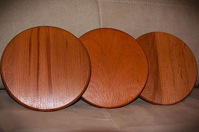
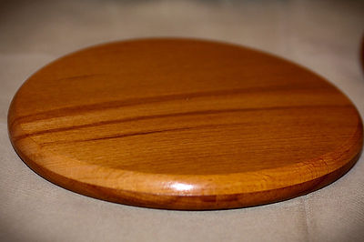
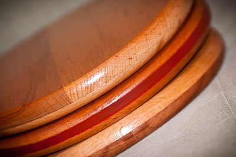
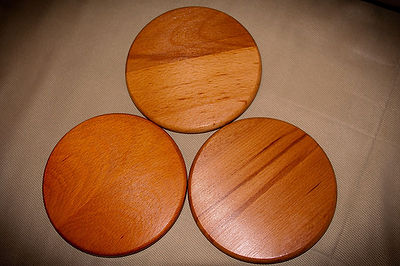
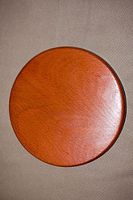

Гармонизатор «ЯЙ-ОСИДО: ЗЕРКАЛО ЖИЗНИ» (Я.С. Ибадов, В.П. Гоч)
|  |  |
|---|---|
|  |  |
|  | |
Гармонизатор «ЯЙ-Осидо» продолжает серию гармонизаторов
«Ключ Жизни». Научная основа разработки -– методы Альтернативной Психологии, рунные технологии
(В.П. Гоч), результаты проведенных научных исследований, полученные современными
инструментальными электорофизиологическими методами (ЭКГ, ЭЭГ, ЭМГ, Фолля, ГРВ) с помощью
системы «AURA_Vibralmag», диагностического комплекса «Омега-2М» и методом информационного
контроля (торсионный фазовый портрет).
В работе устройства в качестве кодирующего элемента
использовано особое сочетание ключей янского и иньского происхождения, которые в соединении со
спиралями образуют новый символ -– «символ Жизни».
На рунном языке (В.П. Гоч), позитивный Ян-ключ
соответствует изображению руны «Яй», а Инь-ключ – руне «Йех». При соединении данных символов
«Яй» и «Йех» получается руна «Аль-Го», ключевыми словами которой являются « защита, зеркало».
Также при соединении двух «символов Жизни» образуется новый символ -– «зеркало Жизни». Руне «Яй»
соответствует русская буква «я», а руне «Йех» -– буква «й». Буквенное сочетание «я» и «й»
представляет собой азербайджанское слово «яй» –- лук, на рунном языке «лук» –- осидо. Таким
образом сформировалось название гармонизатора «ЯЙ-Осидо», кодирующим элементом которого является
«символ Жизни».
Гармонизатор оказывает преобразующее и гармонизирующее
воздействие на биологические объекты и окружающее пространство. Результатом воздействия
гармонизатора на объект является восстановление информационных составляющих поля объекта во
времени. В основе работы гармонизатора происходит коррекция метаморфоз времени систем на
многомерном уровне. Новый гармонизатор способствует адаптации человека в Новом Времени.
Гармонизатор «Яй-Осидо: Зеркало Жизни» –- результат многих лет труда.В нем собрано много
информации и одновременно в него вложена новая информация, которая создана для блага
Человечества. Общаясь с этим гармонизатором, человек получает освобождение от негативного
прошлого, так как сам гармонизатор отражает негативные информации прошлого. Одновременно,
являясь местом метаморфоз Жизни, гармонизатор способствует проведению в будущее и развитию в
будущем позитивных информаций.
Область применения: медицина, физика, химия, биология,
экология, сельское хозяйство, пищевая промышленность и др.
Гармонизатор позволяет:
улучить микроциркуляцию крови конечностей, восстановить нарушенный лимфатический отток в
органах и системах;
облегчить процесс реабилитации при хронических состояниях;
наладить работу энергетических центров (чакр) человека;
улучить обменные процессы в организме и повысить иммунитет;
нормализовать и восстанавливать функции коры нейронов головного мезга, нервно-мышечных
элементов;
cнять усталость, стресс, головную боль, активизировать процессы мышления, памяти и
омоложения;
cтруктурировать воду, улучшая ее физическо-химические и биологические свойства;
улучить основные функции крови: дыхательную, гомеостатическую, защитную;
восстановить работу сердечно-сосудистой системы;
осознанно влиять на информационные характеристики различных объектов и веществ;
повысить эффективность сельскохозяйственного производства.
Любой материал, из которого изготавливается
гармонизатор, имеет свои качества и выбирается не случайно. Особо учитывается его воздействие на
человека. Представляя собой часть дерева, буковая основа гармонизатора оказывает по подобию
особое воздействие на те органы человека, которые имеют форму дерева. В физическом теле человека
форму дерева имеют бронхи («бронхиальное дерево») и мозжечок – отдел головного мозга. По подобию
формы (ПИД-эффект) бук оказывает гармонизирующее воздействие на эти органы. Древесина бука также
оказывает гамонизирующее воздействие на равновесие стихий в организме человека. В соответствии с
воззрениями китайской медицины, каждый орган человека связан с определенной стихией, и
гармонизация стихий ведет к улучшению состояния организма.
В буке, как и в человеке, записана информация о
времени. У дерева эта информация визуализируется и присутствует в годичных кольцах, у человека –
в ДНК, биоэнергетической матрице. Когда мы взаимодействуем с гармонизатором, через биорезонанс
может происходить активизация временных записей, находящихся в физическом теле человека, что
способствует более полной и быстрой коррекции этих записей кодирующим элементом - «символом
Жизни».
Бук принадлежит семейству дубовых и обладает подобными
дубу духовными качествами. Является источником жизненной силы, защищает пространство от
проникновения негативных сил. Дуб «прикрепляет» к себе несовершенства, тяжелые качества и
привычки людей, дающие отсталость (отставание от времени), трансформирует их, освобождая таким
образом духовную силу человека, плавно вводя её в Новое Время.
Дополнительная информация по буку.
Гармонизатор изготовлен из древесины бука. При выборе
материала учитывались особые свойства бука. Бук у разных народов выступает как символ
величественности, процветания, чести и победы, стойкости и полноты жизненных сил. С ним
связывается символика письменности, буквенного знания, литературы (русс. «буква», англо-сакс.
«boc», анг. Book – «книга» и др.). Этимология слова, возможно, имеет славянские корни (Букварь).
Вместе с кипарисом и певгом бук служил материалом для
постройки Иерусалимского храма. Бук живет до 500 лет, но после 80-ти лет в высоту не растет, а
лишь утолщается его ствол и развивается крона. Любит свет и тепло. Буковые леса -– бучины –-
имеют важное значение в поддержании чистоты воздуха и водных источников, в защите почв от
эрозии. Таким образом, бук соединяет в себе все природные стихии и регулирует их взаимодействие.
Бук – исключительно горное растение и выполняет данную
ему природой работу. В процессе фотосинтеза он преобразует солнечную энергию в биохимическую,
выделяя через корни в почву различные органические и неорганические вещества, способствующие
повышению ее плодородия. Бучины способствуют переводу поверхностного стока воды во
внутрипочвенный (работа на фазе, на уровне метаморфоз), обеспечивают равномерное поступление
осадков в реки, предохраняют естественные и искусственные водоемы от заиления. В качестве
гипотезы можно предположить, что бук дает фазовую основу горной местности.
Деревянные гармонизаторы «Яй-Осидо» выполнены в трех
размерах: диаметром 5, 9 и 18 см.
Гармонизатор «Яй-Осидо» – 18 см удобен для
структурирования воды, гармонизации сердечно-сосудистой системы, психоэмоционального состояния,
при работе с позвоночником. Рекомендуется прикладывать гармонизатор к спине (на уровне нижнего
края лопаток) и держать его до полного исчезновения неприятных ощущений в области позвоночного
столба (30 мин. – 1 час).
Гармонизатор «Яй-Осидо» – 9 см рекомендуется помещать
под подушку во время сна, прикладывать к больным местам на теле, а также использовать для
массажа.
Гармонизатор «Яй-Осидо» – 5 см рекомендуется для
коррекции состояния головного мозга (для этого следует расположить гармонизатор в области левого
уха на расстоянии 2-3 см), а также для коррекции работы энергетических центров (чакр) человека.
Использование гармонизаторов не имеет противопоказаний, рекомендуется повсеместно и для всех возрастов. Для наибольшего эффекта можно проводить цикл сеансов с применением гармонизаторов в комплексе. Человек сидит в кресле, при этом гармонизатор – 18 см находится за спиной на уровне лопаток, парные гармонизаторы п 9 см располагаются на коленях, а гармонизаторы по 5 см – под ладонями (руки лежат на подлокотниках кресла). Продолжительность коррекции функционального состояния человека – около 40 минут.